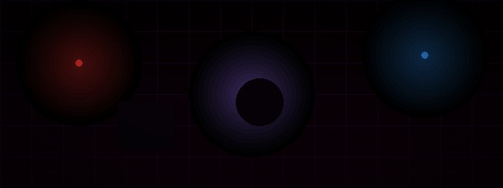
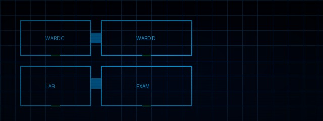
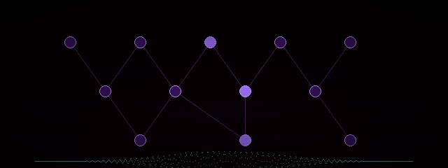

Behind the creation of BlackLight worlds

Focused on building atmospheric horror lighting using Unreal Engine. Tested dynamic red pulse lights, shadow movement behavior, and environment fog layering. The goal was to create tension through light density rather than darkness alone — making the player instinctively aware of something present without showing it directly.

Created the abandoned hospital layout, including corridor flow, environmental storytelling props, and tension-based room structure. Blueprint iteration 7 finalized Ward C — the primary gameplay zone. Each room is designed to guide the player without feeling guided.

Developed a non-direct AI presence system designed to create psychological fear through sound cues, shadow movement, and environmental reactions. The creature is never shown directly in early encounters — only its behavioral signature is detectable, making it feel like an idea rather than an entity.